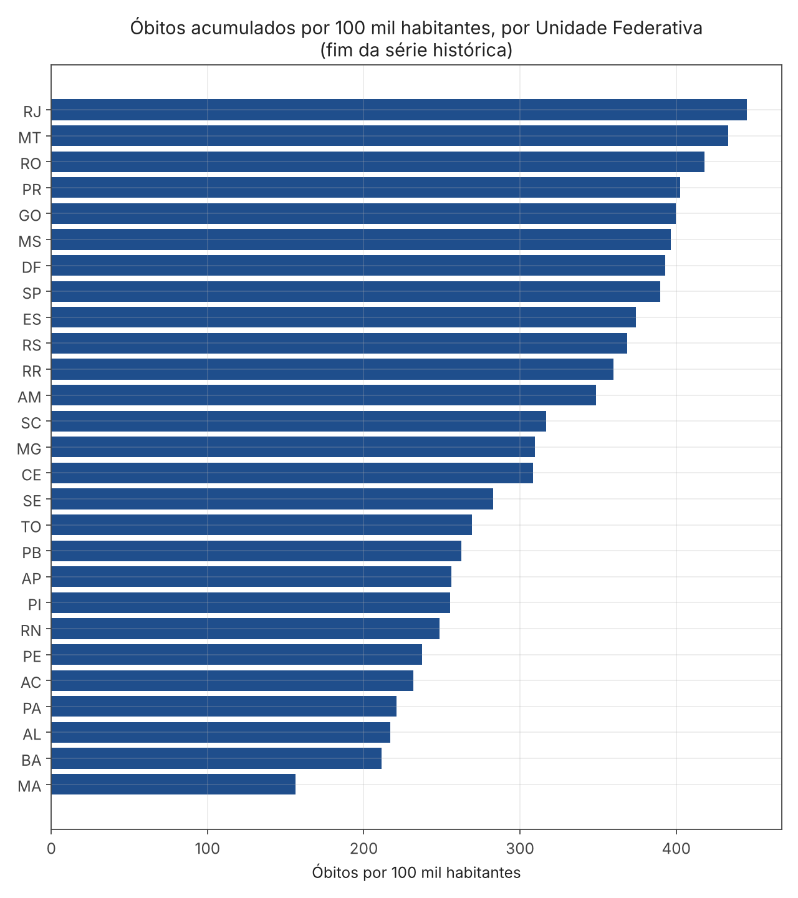
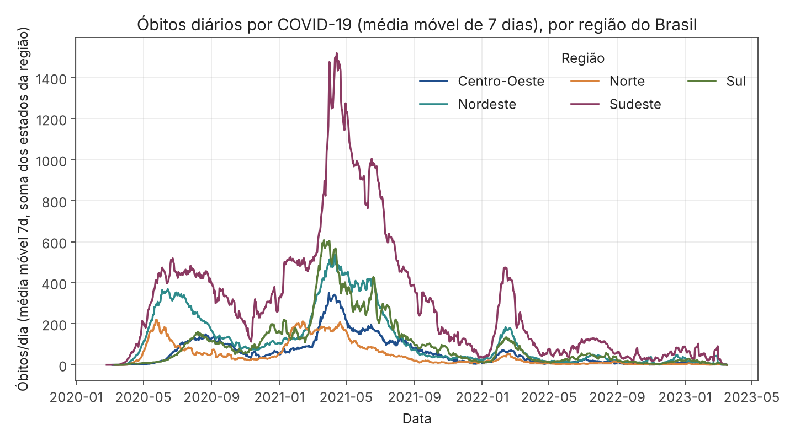
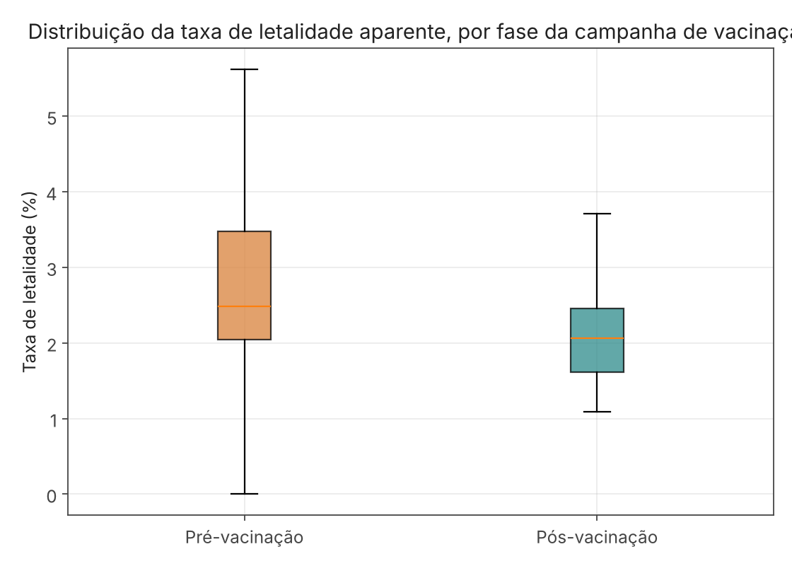

Bacharelado em Sistemas de Informação — 6º Período
Disciplina: Linguagem de Programação (Análise e Visualização de Dados com Python)
Professor(a) orientador(a): a preencher pelo discente
Este artigo apresenta um estudo analítico-exploratório sobre a
disseminação da COVID-19 nas 27 Unidades Federativas do Brasil entre
fevereiro de 2020 e março de 2022, empregando um pipeline
determinístico em Python (pandas/numpy) para
ingestão, limpeza e enriquecimento de dados públicos originários do
Brasil.IO. A metodologia inclui engenharia de métricas derivadas
(médias móveis de 7 dias, taxa de letalidade aparente, fase da
campanha de vacinação) e visualização estática e interativa (Plotly)
para responder a três perguntas de pesquisa sobre a magnitude regional
do impacto, a relação entre cobertura vacinal e letalidade, e o efeito
da vacinação na gravidade clínica aparente da doença. Os resultados
indicam forte heterogeneidade entre estados — de 156 a 445 óbitos por
100 mil habitantes —, uma correlação fraca e positiva entre cobertura
vacinal e letalidade no corte transversal final (r ≈ 0,24, atribuída a
fatores de confusão temporais), e uma queda consistente na letalidade
mediana após o início da vacinação (2,49% → 2,06%). O estudo segue
integralmente os princípios FAIR de ciência aberta, com repositório
público, dicionário de dados, licenciamento explícito e ambiente
computacional reprodutível.
Palavras-chave: COVID-19, Análise de Dados, Python, Visualização de Dados, Princípios FAIR, Epidemiologia, Saúde Pública.
A pandemia de COVID-19 produziu, no Brasil, um dos maiores volumes de dados epidemiológicos abertos já disponibilizados publicamente por iniciativa cidadã — destacando-se o projeto Brasil.IO, que desde 2020 consolida boletins diários das Secretarias Estaduais de Saúde em um formato tabular acessível. A mera disponibilização desses dados, no entanto, não garante sua utilidade analítica: é necessário um pipeline de engenharia de dados rigoroso, auditável e reprodutível para extrair conhecimento confiável a partir de boletins heterogêneos, sujeitos a retificações e lacunas de notificação.
Este trabalho tem como motivação prática compreender, de forma quantitativa, como a pandemia afetou de maneira desigual as diferentes regiões do país e em que medida a campanha de vacinação alterou o perfil de gravidade da doença — informações relevantes tanto para a gestão de políticas públicas de saúde quanto como exercício de ciência de dados aberta e reprodutível.
A fonte primária dos dados é o Brasil.IO, dataset
covid19, tabela caso_full — boletins de casos e
óbitos por município, consolidados a partir das Secretarias Estaduais de
Saúde, licenciados sob CC BY-SA 4.0. O arquivo bruto completo
(caso_full.csv.gz, ≈88 MB, granularidade diária por
município) excede o limiar de 50 MB estabelecido pela norma do projeto
para versionamento direto; por isso, o pipeline consome uma cópia
estruturada e já agregada por Unidade Federativa — mantida pelo projeto
aberto wcota/covid19br, que por sua vez consolida o próprio
Brasil.IO como fonte — preservando integralmente a rastreabilidade até a
origem. A proveniência completa está documentada em
data/data_dictionary.md.
O tratamento foi conduzido em Python 3.11, com
pandas e numpy, e inclui: remoção do registro
agregado nacional (state == "TOTAL") para evitar dupla
contagem; tipagem explícita de colunas numéricas; junção com metadados
de região geográfica por UF; e três famílias de métricas derivadas.
# Trecho real de src/etl.py — engenharia de métricas derivadas
df["lethality_rate"] = np.where(
df["totalCases"] > 0, df["deaths"] / df["totalCases"], np.nan
)
df = df.sort_values(["state", "date"])
df["cases_7d_avg"] = (
df.groupby("state")["newCases"]
.transform(lambda s: s.rolling(7, min_periods=1).mean())
)
df["wave_phase"] = np.where(
df["vaccinated_per_100_inhabitants"].notna()
& (df["vaccinated_per_100_inhabitants"] > 0),
"pós-vacinação", "pré-vacinação",
)
Valores ausentes nas colunas de vacinação, anteriores ao início da
campanha (jan/2021), foram tratados como ausência estrutural —
nunca imputados como zero — para não distorcer médias de cobertura.
Registros de retificação com valores diários negativos foram
preservados, em conformidade com o princípio de não realizar operações
destrutivas sem rastreabilidade. Os dados processados foram persistidos
em formatos abertos e colunarmente tipados:
data/processed/covid_states_processed.parquet e
.csv.gz.
O Brasil registrou, em média nacional, 315,3 óbitos por 100 mil habitantes ao longo da série histórica, mas com dispersão expressiva entre estados: do Rio de Janeiro (445,1), Mato Grosso (433,1) e Rondônia (418,2) no topo, ao Maranhão (156,2), Bahia (211,5) e Alagoas (217,0) nas posições mais baixas — uma razão de quase 3× entre o estado mais e o menos afetado proporcionalmente.

A trajetória temporal (Figura 2) evidencia três ondas nacionais nitidamente sincronizadas entre regiões — meados de 2020, o pico acentuado do início de 2021 (variante Gama/P.1, concentrado no Sudeste) e uma onda residual no início de 2022 (período Ômicron) — com a região Sudeste consistentemente liderando o volume absoluto de óbitos diários, compatível com sua maior densidade populacional.

Ao final da série, a cobertura vacinal (1ª dose) nacional média foi de 84,5% da população, variando de 73,4% (Amapá) a 96,6% (Piauí) — indicando convergência relativamente alta entre estados apesar das diferenças logísticas regionais. No corte transversal do último dia disponível, a correlação de Pearson entre cobertura vacinal e taxa de letalidade aparente foi de r ≈ 0,24 — fraca e, de forma contraintuitiva, positiva.
Essa correlação positiva fraca não deve ser lida como "vacinar mais aumenta a letalidade" — trata-se de um efeito de confusão temporal clássico em dados observacionais de corte transversal: estados que sofreram ondas mais severas antes da vacinação em massa (quando a letalidade era estruturalmente mais alta, por menor capacidade hospitalar relativa e ausência de imunização) também tendem a ser os que, posteriormente, atingiram maior cobertura vacinal acumulada. A análise longitudinal da seção seguinte controla parcialmente esse viés ao comparar fases dentro de cada série temporal, em vez de um único corte final.
Comparando a distribuição da taxa de letalidade aparente antes e depois do início de cada campanha estadual de vacinação (Figura 5), observa-se queda consistente: a mediana recua de 2,49% no período pré-vacinação para 2,06% no período pós-vacinação, e a média de 3,06% para 2,13% — uma redução de cerca de 30% na letalidade aparente média, compatível com a expectativa clínica de que a vacinação reduz a progressão para desfechos graves e óbito.

Em conjunto, os resultados de RQ2 e RQ3 ilustram um ponto metodológico central em análise de dados observacionais: a mesma pergunta — "a vacinação reduz a letalidade?" — pode produzir respostas aparentemente contraditórias dependendo do desenho analítico (corte transversal vs. comparação longitudinal de fases), reforçando a importância de múltiplas perspectivas analíticas antes de extrair conclusões causais.
Este estudo demonstrou, a partir de um pipeline reprodutível em Python, que a pandemia de COVID-19 afetou de forma marcadamente desigual as Unidades Federativas do Brasil — com uma razão de quase 3× entre os estados mais e menos atingidos proporcionalmente à população — e que o avanço da vacinação esteve associado a uma queda consistente de aproximadamente 30% na letalidade aparente mediana, quando analisada longitudinalmente por estado.
Limitações: os dados refletem casos e óbitos
confirmados e notificados, sujeitos a subnotificação
heterogênea entre estados e períodos (especialmente em 2020, antes da
ampliação da testagem); a métrica de letalidade aparente
(deaths/totalCases) é sensível à taxa de testagem e não
equivale à letalidade clínica real; e a correlação cobertura vacinal
× letalidade no corte transversal está sujeita a fatores de confusão
temporais, como discutido na Seção 3.2.
Trabalhos futuros poderiam incorporar a granularidade
municipal completa do caso_full original para investigar
desigualdades intraestaduais, cruzar os dados com indicadores
socioeconômicos (IDHM, renda, acesso a leitos de UTI) e aplicar modelos
de regressão com defasagem temporal (lag) para estimar o efeito causal
da vacinação de forma mais robusta que a comparação de fases aqui
empregada.
README.md abrangente, palavras-chave indexadoras e link perene para a fonte original dos dados brutos; identificação de autoria, disciplina e instituição no cabeçalho deste artigo.data/data_dictionary.md; dados processados persistidos em Apache Parquet e CSV.GZ (formatos abertos).requirements.txt com dependências estritamente travadas, viabilizando a recriação do ambiente.Reprodução integral do pipeline:
git clone https://github.com/marcelobarbosa-dev/analise-dados-covid19-brasil.git
cd analise-dados-covid19-brasil
python3 -m venv .venv && source .venv/bin/activate
pip install -r requirements.txt
python src/etl.py # baixa e limpa os dados
python src/analysis.py # gera as figuras deste artigo